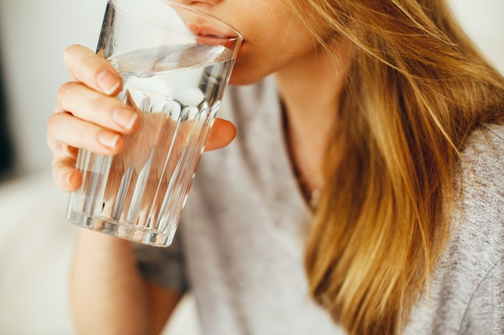
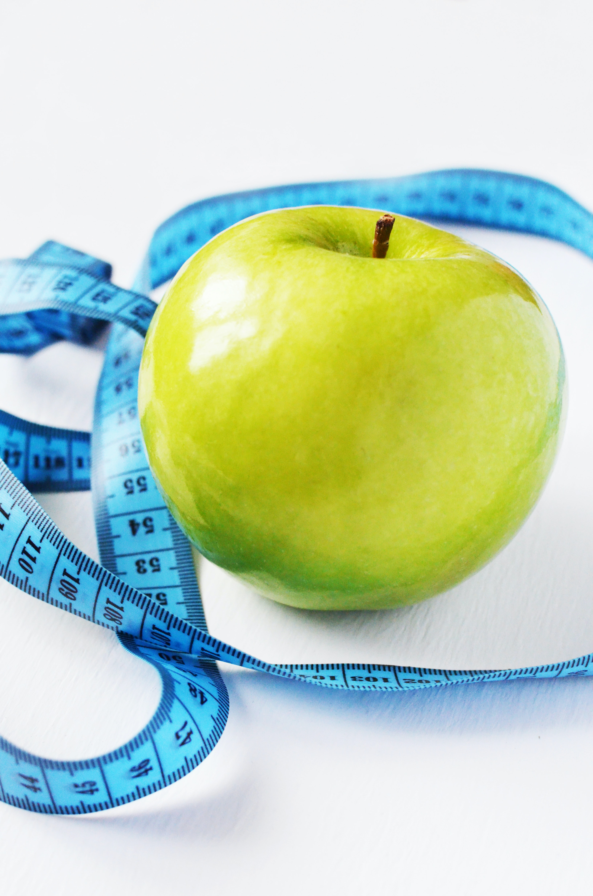

No farmacológicos
Horas de descanso
Recuerda que debes descansar un mínimo de ocho horas al día.
¿Descansaste suficiente hoy?
Sí
No
Registrar
Rutina deportiva
Realizar algún tipo de deporte ayuda a mejorar tu salud, por eso es importante mantener una rutina
deportiva.
¿Realizaste tu rutina deportiva hoy?
Sí
No
Registrar

Consumo de agua.
Mantener tu cuerpo hidratado es importante, por eso debes consumir mínimo ocho vasos de agua al día.
¿Consumiste suficiente agua hoy?
Sí
No
Registrar

Alimentación.
Mantener una dieta saludable es de suma importancia para tu salud.
¿Seguiste tu dieta hoy?
Sí
No
Registrar